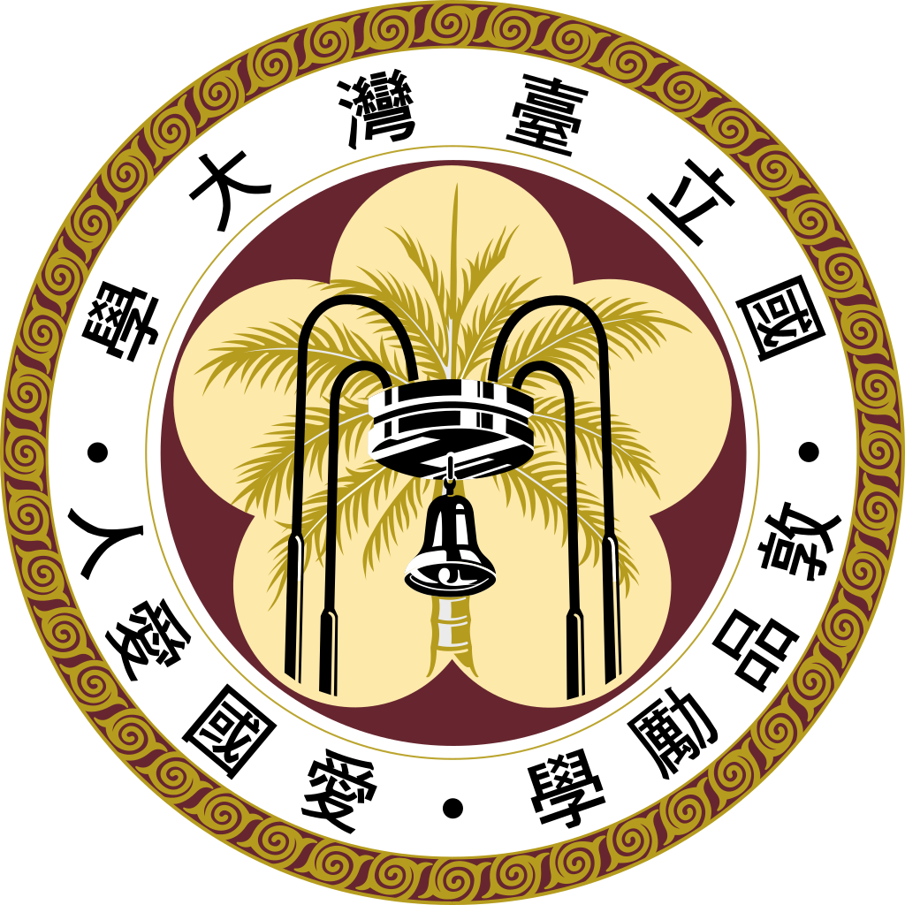
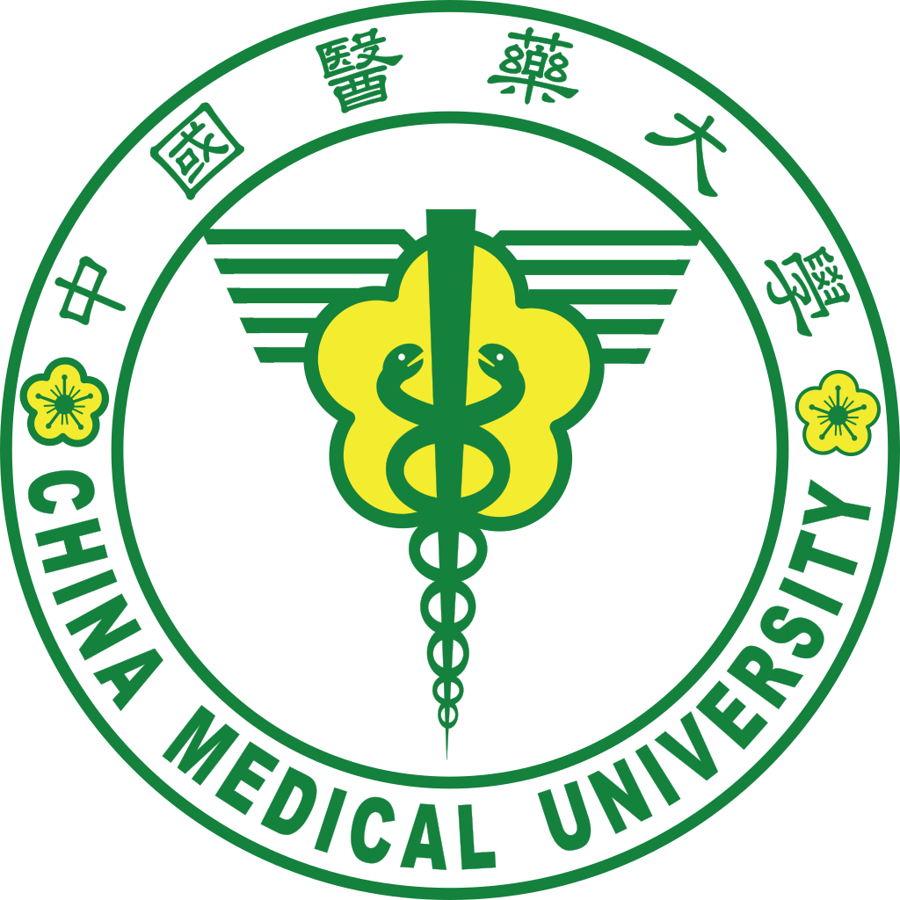
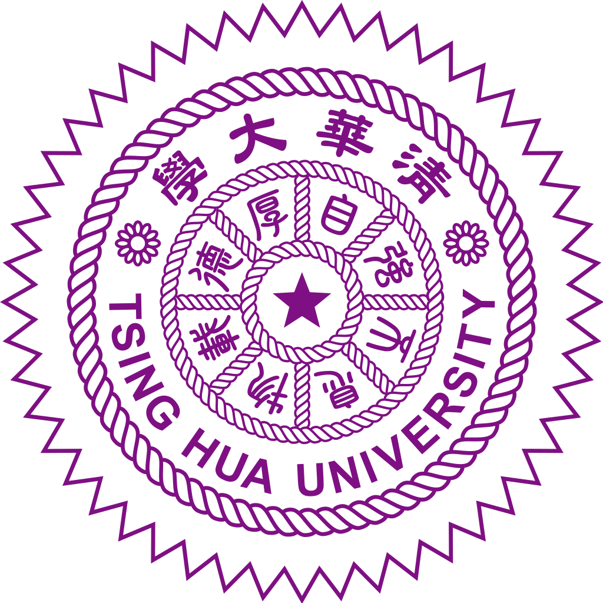
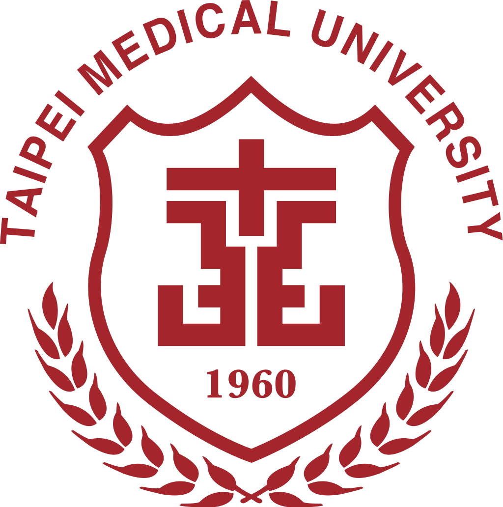
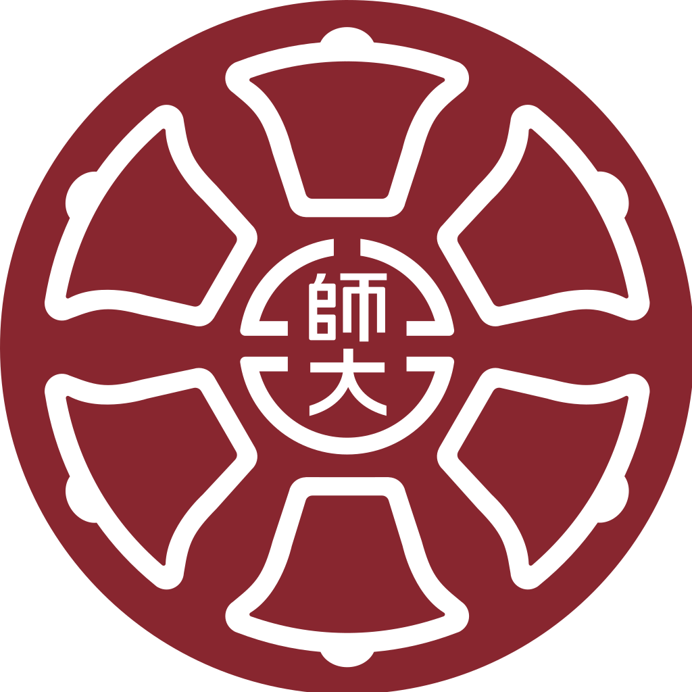

TOP 10 台湾大学

1.国立台湾大学
简称台湾大学、台大、NTU，于1928年创立，是台湾第一所高等教育机构，也是台湾学生人数最多的大专校。现设有11个学院、3个专业学院，下分56个学系、111个研究所与18个学位学程；另外还设有超过50多个各学术领域之国家级或校级研究中心以及进修推广部、医大等附属机构。

2.中国医药大学
简称中国医大、中国医或中医大，学术单位共9学院，18个学系。校区有分为学士校区、五权校区、安康校区、水湳校区、北港分部。目前，全校共有9个学院，18个学系（含1个学士后及1个不分系）、24个硕士班暨硕士学位学程、18个博士班暨博士学位学程，以及通识教育中心。

4.亚洲大学
简称亚大，位于台湾台中市雾峰区的综合大学。学术单位包括医学暨健康学院、资讯电机学院、管理学院、人文社会学院、创意设计学院、护理学院、人工智慧学院，共7学院，28个学系，4个进修学士班，22个硕士班研究所，9个硕士在职专版研究所，和8个博士班研究所。

5.国立清华大学
简称清华、清大，一所研究综合型综合大学。拥有电机资讯学院、理学院、工学院、生命科学暨医学院、原子科学院、人文社会文学院、科技管理学院、竹师教育学院、艺术学院、台北政经学院等。

7.台北医学大学
简称台北医大、北医大、北医，是一所私立医学大学。目前共经营6间医院，分别为自营的田贝医学大学附设医学院、台北癌症中心、台北精神医学中心，与受托经营的万芳医院、双核医院及新国民医院。

9.国立台湾师范大学
简称台师大、台湾师大或师大，是国立综合型大学，台湾第一所师范大学。学术单位有着文学院、教育学院、学习咨询专业学院（隶属于教育学院）、国际与社会科学学院、管理学院、音乐学院、艺术学院、理学院、生命科学专业学院（隶属于理学院）、科技与工程学院、运动与休闲学院、跨域科技产业创新研究学院。